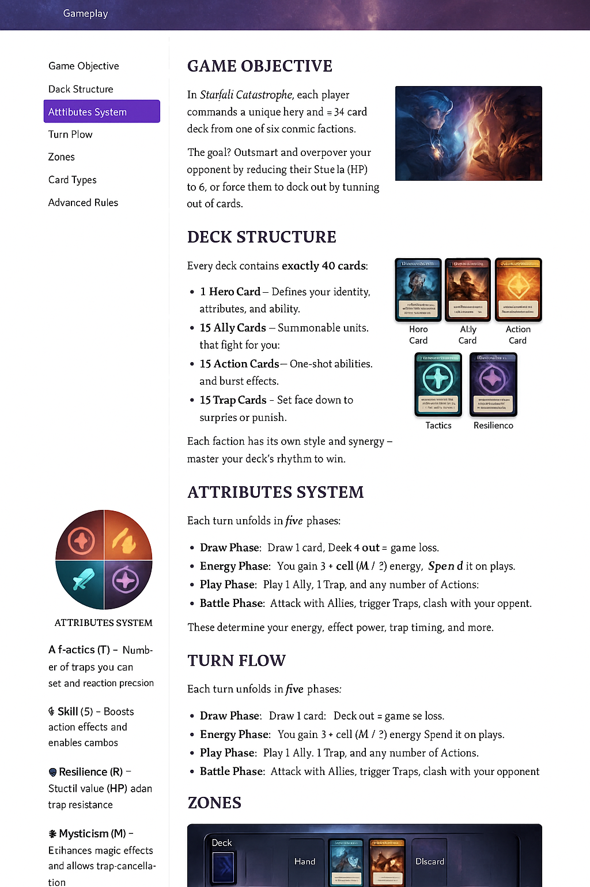

Game Objective
In Starfall Catastrophe, your goal is simple: outmaneuver your opponent and secure victory through one of the following methods:
- Shield Break: Reduce your opponent's Shield (HP) to zero.
- Deck Out: Force them to draw from an empty deck.
Every hero begins with a faction-specific strategy — choose yours wisely and execute your win condition with precision.
